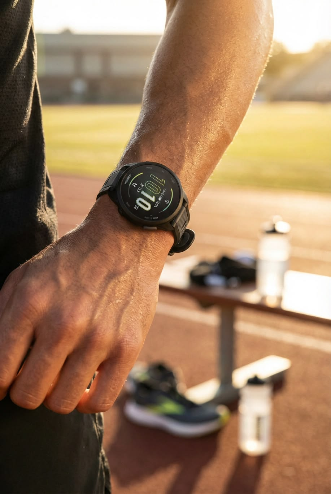

Attention is
the resource.
The Essential Watch starts from a simple conviction: a watch should give time back, not take it. Everything else in this project is a consequence of that sentence.
An instrument,
not an app store.
The software layer is built on three priorities, in order: legibility, battery life, and one-glance information over feature bloat. A mode earns its place by answering one question well, then getting out of the way.
A watch face that is always readable, in sunlight or at 3 a.m., without a gesture or a wake. A battery measured in weeks, so the watch is never another device to feed each night. An interface that ends the interaction in a single glance, because the point of knowing the time is to go do something else.
Rugged utility still has a home here. A stopwatch with true centisecond capture, interval timers, alarms, heart rate on demand. These features are borrowed deliberately, from watches that earned them over decades, and only where they pay their way.
Five rules the watch must obey.
Calm by default
The resting state shows the time and almost nothing else. Notifications arrive as a tap, not a parade. Nothing on this watch is allowed to litigate for your focus.
One glance is enough
Every mode answers exactly one question: what time is it, how long has it been, how much is left, what is my heart rate. If a screen needs studying, it is designed wrong.
Repairable by design
Four Torx screws and a gasket open the back. The strap is quick-release. The battery is replaceable. A tool you cannot open is a tool you do not own.
Every feature pays rent
Nothing ships because a competitor has it. Features are admitted one by one, against the three priorities above. Games are still waiting outside the door.
Document the thinking
No polished-render-only reveals. Research, decisions, iterations, and results get written down as they happen, including the wrong turns. This site is that record.
What each legend teaches.
The Casio F-91W teaches restraint. It costs less than a dinner, runs for years on a coin cell, and has outlived every gadget deriding it. It is dependable to the point of being invisible, which is the highest compliment a tool can receive.
The Apple Watch Ultra teaches capability. It proves a wrist computer can survive the ocean and the trail, and it sets the ceiling for what sensors and software can do in this form factor. It also needs nightly charging and an ecosystem that wants your evening.
The Essential Watch sits deliberately between them: accessible enough for everyday wear, tough enough for the trail, and quiet enough that you forget it is smart.

Why a monochrome OLED.
In September 2026 the display plan moved from e-paper to a monochrome OLED. The reasoning is part of the record.
A single-color panel keeps the interface honest. With one ink and a dark ground, every screen is a 1-bit design problem, and restraint stops being a taste call and becomes physics. The panel is emissive, so night reading no longer needs a lamp module, and the dark-default UI draws almost nothing at rest.
The trade-offs are real and documented: an emissive panel washes out in direct sun, so the glass keeps a matte anti-reflective stack and the UI goes maximum contrast, with a peak-brightness burst on wrist-raise. Static elements risk burn-in, so they shift occasionally and the always-on state stays dim. The battery budget now depends on that duty cycle, and the power model gets re-run once a panel is chosen.
How this gets built.
A sequence of trial and error, in public, with industrial design skill, engineering, and taste growing along the way. AI is the tool belt on the waist, not the hand on the pen.
Emulate first
The watch OS runs in the browser before any circuit exists. Every interaction gets tested where iteration costs nothing. The emulator on this site is that lab.
Design the object
CAD, materials, anodizing swatches, strap geometry. The industrial design follows the interface, because the hand should learn from what the eye already trusts.
Prototype for real
Bench bring-up on a coin cell, then a shaped rechargeable cell. Drop tests for the display mount, listening tests for the piezo, feel tests for the haptics.
Produce, someday
This is a passion project with a product ending. When the prototype stops surprising, the question becomes a run of units, and the journal will show exactly how that decision went.